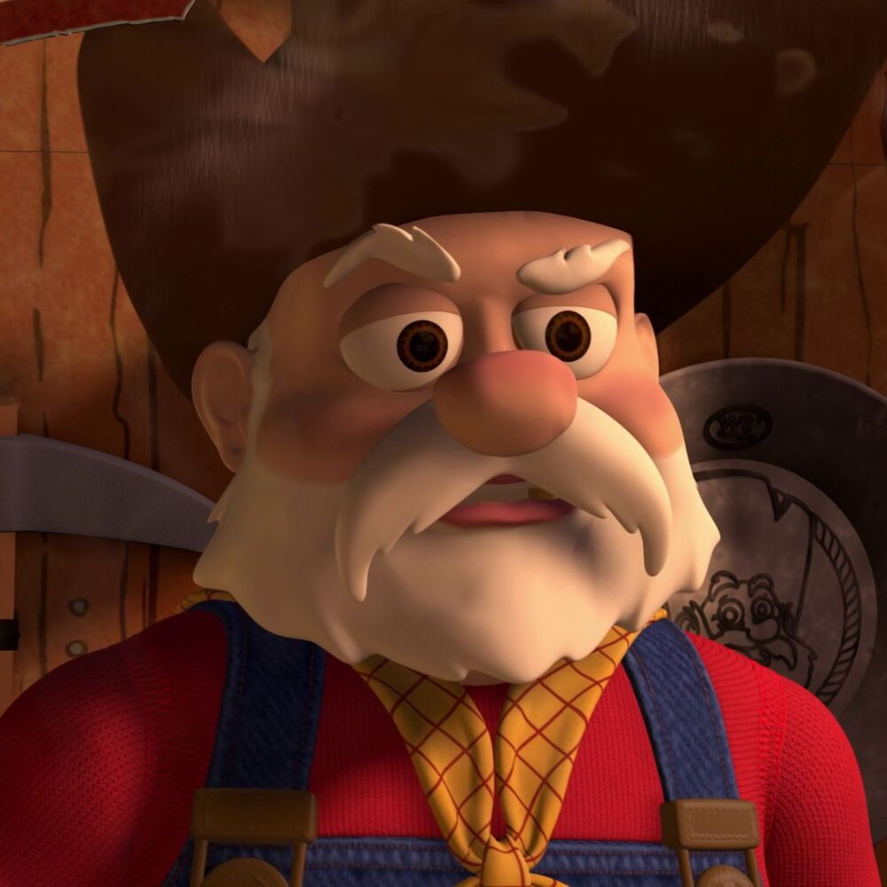
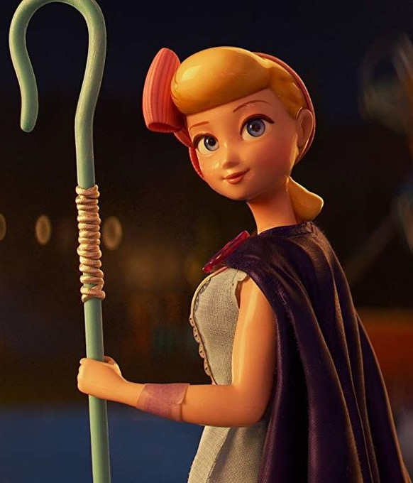
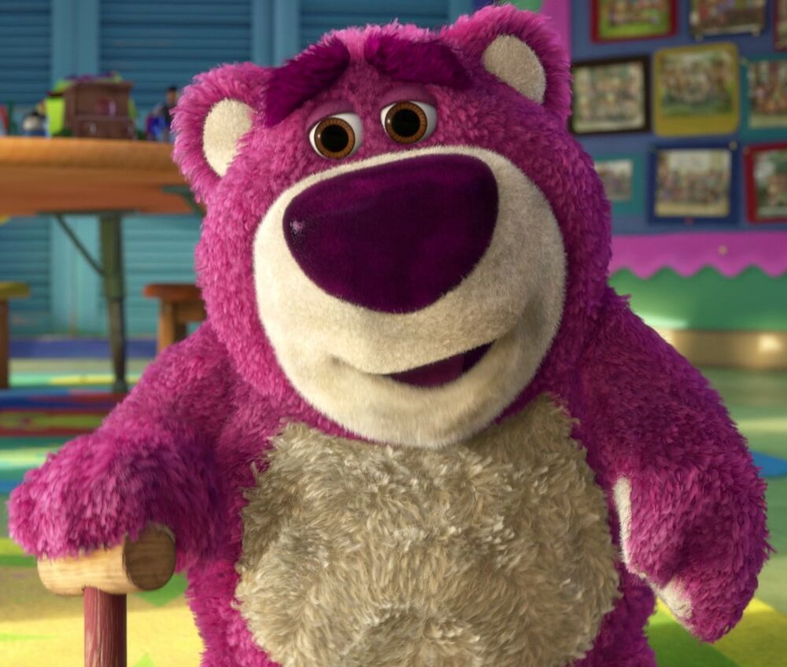
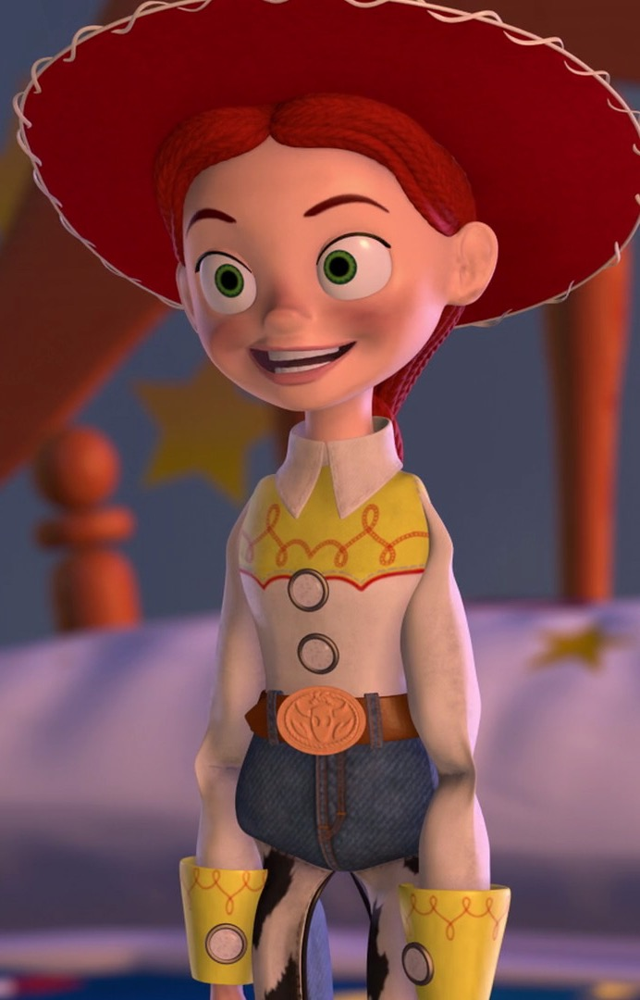

Allies
Enemies
“To Infinity and Beyond!” Buzz, like many characters in Toy Story, is a complicated one, who feels genuine emotions such as pride, anger, depression, and sadness, much like a regular human. These are traits which he shares with his best friend, Woody, however, one would say that Buzz is better at keeping his emotions in check than the cowboy. Buzz is known for his bravery and courage with a by the book mindset, believing the way people should live their life by the following rules; though there are rare moments when he will bend the rules or tell a cover story if needed to when he knows it is the right thing to do. Though possessing great leadership qualities.
Stinky Pete the Prospector
His own inexperience of being played with by a child, along with hearing Jessie's story of being outgrown by her previous owner Emily lead to him feeling that children were only destroyers of toys whose ultimate fate will be spending an eternity rotting in landfills. He also believed that rare, unpopular and collectible toys like him and the other Roundup toys were doomed to either always ending up in storage or remaining unsold to any children similar to his fate before Al found him. These beliefs further motivated his desire to spend an eternity in the museum, accepting it was the only salvation for all toys.
Bo Peep
Bo is the romantic interest (later girlfriend) of Woody, providing a calm and loving comfort whenever he is overwhelmed. She is noted for using her shepherdess crook to hook her cowboy and bring him closer in a romantic way. In private, she is a great deal more daring with her words and actions, which Woody seems to be quite fond of.
Al McWhiggin

“I despise that chicken!” Al is greedy and funny at the same time. Al is intelligent and collects toys in his own kind of way. He never breaks them or throws them around to the point that they lay on the ground broken. Instead, Al sells off the toys after kidnapping them to do his plan. His mind is bent solely on money and materialistic pleasures and he will do anything in his power to obtain them, which in turn makes him skilled in his business and trade.
Hamm

Hamm is a wisecracking piggy bank. He and Mr. Potato Head appear to be best friends, as they are often seen playing games and high-fiving each other whenever something spectacular happens. Hamm is somewhat of a technological genius. He can identify types of trash bags, child locks, and is the ultimate channel-hopper in Toy Story 2, as he switches channels far more rapidly than the other toys can.
Lots-o'-Huggin' Bear
Rex suffers from anxiety. He fears being replaced or abandoned, either at the prospect of being thrown away or the arrival of a newer, more ferocious dinosaur toy. Despite his fears, he finds happiness and enjoyment in most things; one of his favorite pastimes include playing video games with his friends, a hobby in which Rex has shown a fair amount of talent. With his childlike demeanor and lack of self-confidence, Rex is the most innocent of all the toys and shows the greatest desire to be loved and played with.
Rex

Rex suffers from anxiety. He fears being replaced or abandoned, either at the prospect of being thrown away or the arrival of a newer, more ferocious dinosaur toy. Despite his fears, he finds happiness and enjoyment in most things; one of his favorite pastimes include playing video games with his friends, a hobby in which Rex has shown a fair amount of talent. With his childlike demeanor and lack of self-confidence, Rex is the most innocent of all the toys and shows the greatest desire to be loved and played with.
Sid Philips

Sid is a young, bratty, and somewhat disturbed 11-year-old skate punk with metal braces, whose idea of fun is terrorizing his little sister, Hannah, by taking her toys away and using them for scary experiments, like switching their heads or performing operations on them. He also destroys toys in many ways (exploding, burning, or in his "mad doctor" plays).
Jessie the Yodeling Cowgirl
Jessie is a friendly, excitable cowgirl doll. She likes being loved by any child and has the power to yodel. She hates being in storage ― as it makes her claustrophobic ― and not having someone to love her. A girl named Emily had once loved her until she gave her up and put her in a charity box, which emotionally scarred Jessie forever.
Slinky Dog

Slinky is a nice, friendly, and playful dog. He is quite well-behaved compared with some of Andy's other toys. He shows faith in Woody (sometimes acting like his pet), and he'll do anything to help his friend out. He is friends with all of Andy's toys, has a sense of humor, and enjoys playing checkers with Woody.